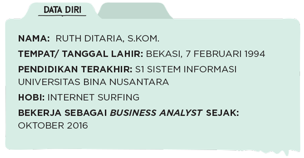
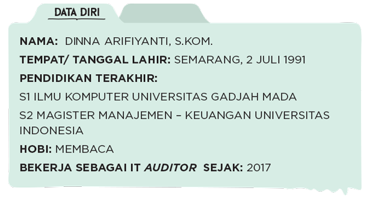

Sepak terjang perempuan Indonesia di dunia teknologi memang semakin tinggi. Beberapa posisi dengan tanggung jawab pekerjaan beragam berhasil mereka taklukkan. Cewekbanget.id berkesempatan mengobrol dengan perempuan-perempuan hebat ini mengenai profesi mereka, dan tentunya bisa menjadi inspirasi untuk kamu semua yang bercita-cita menekuni profesi yang sama.
Mereka sudah berhasil membuktikan diri bisa bersaing di dunia IT. Sekarang, giliran kamu!
AULIA “LLIA” HALIMATUSSADIAH
Pernah enggak terbayang untuk nerbitin buku karya sendiri, yang kita tulis dengan segenap hati, tapi malah ditolak oleh penerbit? Perasaan kecewa, sedih, dan pengin menyerah pasti akan terlintas dalam benak. Tapi enggak begitu dengan Aulia Halimatussadiah, atau lebih akrab dikenal sebagai Llia.
Llia memang bukan sosok asing di bidang digital dan tulis-menulis. Dia adalah founder dari startup NulisBuku.com, platform digital yang memberi kesempatan bagi para penulis untuk menerbitkan bukunya secara mandiri, dan juga Storial.co, platform digital tempat penulis bisa mem-posting tulisannya secara digital seraya mendapat royalti.
Jauh sebelum menciptakan dua startup pioneer tersebut, Llia terlebih dahulu membuat toko buku online bernama kutukutubuku.com di tahun 2007 sebelum akhirnya tutup dua tahun lalu. Kini, Llia sedang fokus memimpin perusahaan ketiganya bernama Zetta Media, sebuah media digital yang membawahi 11 portal lifestyle.
“I want to scratch my own ache,” tutur Llia. Mendirikan sebuah platform self-publishing pertama, NulisBuku.com, diawali dari rasa sakit hati, karena karyanya ditolak oleh sebuah penerbit. Dari rasa kecewa tersebut, muncul ide kreatif untuk mendirikan self-publishing.
NulisBuku.com lahir di tahun 2010 setelah diskusi panjang antara Llia dan tiga partnernya. Website ini kemudian jadi wadah bermunculan penulis-penulis baru di Indonesia, “Jadi saat aku berusaha untuk mengobati ‘luka’ku sendiri, aku juga mengobati ‘luka-luka’ orang lain,” ungkapnya.
Bukan hanya NulisBuku, startup pertamanya, Kutukutubuku, juga muncul dari kesulitan yang dialaminya ketika melakukan transaksi beli buku online. Setahun sejak didirikan, website ini pun berkembang pesat.
Sebagai seorang co-founder dan CCO dari Zetta Media dan telah sukses mendirikan tiga perusahaan lainnya tentu tugasnya menjadi semakin luas. Tanggung jawabnya meliputi merekrut influencer sebagai partner, mengembangkan rencana-rencana dasar bersama Managing & Network Editor untuk masing-masing portal, serta memastikan kalau visi dan misi perusahaan tetap terjaga sesuai tujuan.
“Saat ini masing-masing perusahaan sudah memiliki tim manajemen masing-masing. Masih sering diskusi meskipun enggak terlalu sering seperti di awal-awal. Sebagai seorang founder, yang penting kita punya misi apa yang perlu dicapai. Founder harus make sure visi dan misi itu tetap terjaga. Menjadi problem solver yang baik sehingga setiap orang bisa mendapat solusi secepatnya,” jelas Llia.
Llia juga menjadi salah satu pemrakarsa Girls In Tech Indonesia sejak tahun 2011, yakni sebuah event yang menjadi wadah perempuan-perempuan yang sedang dan ingin aktif dalam dunia IT. Menjadi cewek di dunia teknologi memang membuat Llia terbiasa menjadi minoritas di kalangan teman-temannya yang kebanyakan adalah laki-laki, bahkan sejak kuliah.
Padahal menurutnya, sebagian besar produk teknologi itu target marketnya adalah perempuan. Merasakan adanya ketidakseimbangan itu, selama tujuh tahun ini, Girls in Tech aktif membuat event-event seperti seminar, workshop, dan mentoring. Menurut Llia, peluang perempuan untuk terjun dan menggeluti bidang IT sangatlah luas. Cewek juga lebih gampang untuk bersinar di bidang ini, sehingga saat menciptakan sebuah produk, dia akan lebih mudah disorot oleh media.
Selain pendidikan formal, untuk bisa terjun ke dunia IT juga dibutuhkan berbagai faktor, “Pengembangan diri juga penting, selain pendidikan formal, seperti kursus. Kalau di universitas biasanya hanya diajarkan hal-hal basic saja, jadi kalau mau update yang masa kini, harus bisa mengikuti program-program, tren, dan lain-lain. Harus banyak networking, ikut seminar dan kenalan sama banyak orang. Harus punya rasa curiosity untuk belajar lebih banyak dan tingkatkan kemampuan untuk mengorganisir sesuatu dengan lebih baik, lebih praktis, lebih efisien dalam mengatur waktu dan energi.”

KALISTA CENDANI
Mudahnya mengakses sebuah situs ternyata bukan hanya soal gambar yang menarik atau tulisan yang mudah dibaca. Di balik itu, ada peranan seorang interaction designer atau nama lain dari UI/UX designer. Mereka inilah yang paham betul soal keperluan dan keinginan users yang mengakses situs tersebut.
Seorang interaction designer dari Traveloka, Kalista Cendani awalnya tidak menyangka akan terjun ke dunia IT. Dengan latar belakang pendidikan Jurnalistik di Universitas Indonesia, Kalista pun belajar desain secara autodidak, kemudian bergabung dengan sebuah majalah sebagai graphic designer. Setelah itu, dia pindah ke sebuah digital agency selama 4 tahun yang kemudian mengenalkannya kepada dunia UI/UX.
“Sebagai interaction designer kita harus mengerti kebutuhan pengguna seperti apa, bagaimana orang-orang menggunakan situs/aplikasi Traveloka dan apa kesulitan mereka saat mengakses Traveloka,” ungkap Kalista.
Setiap harinya, seorang interaction designer enggak hanya harus paham soal user experience (UX). Lebih jauh lagi, bisa mengerti perilaku users atau pengguna saat mengakses sebuah situs, misalnya bagaimana mereka berinteraksi, apa yang mereka lihat dan apa yang mereka klik di situs tersebut. Namun, di dalam elemen UX juga ada users interface (UI) yang harus memahami kebutuhan visual, misalnya pemilihan gambar, penempatan tombol dan tulisan pada situs sehingga memudahkan pengguna saat mengakses situs tersebut.
Tanggung jawab seorang interaction designer yaitu melakukan penelitian tentang kebutuhan pengguna situs dan aplikasi Traveloka lewat berbagai cara, salah satunya interview. “Interaction designer mencari tahu bagaimana seseorang melihat situs dan aplikasi Traveloka, apa yang meyakinkan dia mau memesan hotel atau tiket pesawat berdasarkan harga misalnya, kemudian alur seseorang dari awal searching sampai memesan hotel atau tiket itu seperti apa,” beber Kalista.
Setelah melakukan penelitian, interaction designer akan mulai membuat konsep serta kerangka desain yang menggambarkan bentuk situs dan aplikasi yang sesuai dengan kebutuhan pengguna. Setelah itu, dia akan bekerja sama dengan UI designer dan UX copywriter untuk membahas visual yang akan dipakai dan pesan yang akan disampaikan. “Interaction designer harus memastikan konsep yang dia buat tersampaikan dengan baik,” ungkap Kalista.
ANNISA DESIANI
Tidak hanya bermain game, tapi sekarang kita bisa membuat game sendiri. Perlu diketahui bahwa produksi game asli Indonesia semakin berkembang setiap tahunnya, dan Agate Studio, salah satu perusahaan penghasil game di Indonesia, turut berperan di dalamnya.
Annisa Desiani, salah seorang game producer di Agate Studio menjadi contoh perempuan yang sukses di industri game. Annisa atau akrab disapa Icha yang hobi bermain game sejak kecil, tertarik untuk terjun ke industri game setelah melihat pertumbuhan yang sangat pesat di industri ini.
Icha bukanlah seorang yang berlatar belakang pendidikan IT seperti Ilmu Komputer, Sistem Informasi, atau Teknik Informatika. Ia merupakan lulusan Manajemen. Ketika bergabung dengan Agate Studio, Icha justru ditempatkan di bagian Marketing. Namun, seiring berjalannya waktu, Icha belajar cara membuat game. Job desk seorang Game Producer ia tekuni selama 3 tahun sembari tetap berperan sebagai Marketing. Berkat keuletannya, Icha mampu menjabat sebagai Game Producer mulai 2016 hingga saat ini.
Ada banyak pihak yang membidani sebuah game, seperti game designer, composer, artist, programmer, dan game producer. Jika game designer membuat jalan cerita, composer membuat musik, programmer melakukan coding, dan artist membuat ilustrasi, maka seorang game producer-lah yang memastikan kelancaran semua proses tersebut. “Menggabungkan keempat elemen agar menjadi sebuah game, membuat harmonisasi, memastikan semua berjalan lancar merupakan tugas utama dari game producer,” jelas Icha.
Selain membuat harmonisasi, game producer juga harus mampu mengatasi segala kesulitan dalam tim. Karena kesulitan yang dialami salah satu elemen sangat memengaruhi elemen lainnya. “Kita harus memiliki jiwa leadership yang tinggi. Disiplin karena harus bisa bekerja sesuai timeline. Problem solver yang baik dan harus memiliki kemampuan bernegoisasi dan komunikasi yang mumpuni. Tahu dasar-dasar tentang game juga sangat diperlukan di profesi ini,” beber Icha.
Membuat game bukanlah hal yang mudah karena setiap game memiliki tingkat kesulitan yang berbeda. Faktanya, membuat sebuah game bisa memakan waktu selama 6 bulan, girls! Dalam waktu enam bulan, game producer harus mampu menjaga semangat tim agar tidak kendor. Semangat yang mulai luntur justru akan menyulitkan seluruh anggota tim dan pekerjaan jadi terbengkalai.
Dalam kariernya, Icha merupakan salah satu game producer yang cukup senior. Icha sendiri ditempatkan di B2B Game, artinya ia membuat game untuk kepentingan tertentu seperti pesanan perusahaan atau perseorangan. “Sebagai contoh, perusahaan X akan mengadakan orientasi karyawan baru. Daripada dijelaskan tentang teori, akan lebih efektif jika ada game perusahaan X sehingga calon karyawan tidak akan merasa jenuh,” ungkap Icha.

THESSA SILVIANA
Girls, kamu pasti pernah mengisi formulir di dunia digital. Misalnya, ketika mau bikin akun media sosial, maka sebelumnya kita akan mengisi data terlebih dahulu. Nah, profesi Software QA Engineer ini adalah mengetes aplikasi tersebut, dan memastikan agar pengguna enggak menemukan error atau kesalahan ketika sedang menggunakan aplikasi tersebut.
Di beberapa perusahaan, posisi ini mungkin memiliki sebutan yang berbeda-beda, seperti Quality Insurance atau Quality Control. Yuk kenalan dengan Thessa Silviana, Software QA Engineer di salah satu marketplace di Indonesia.
Profesi ini memastikan sebuah aplikasi enggak memiliki error yang critical atau blocker. Misalnya ketika klik submit dan enggak terjadi apa-apa, maka itu adalah salah satu error atau bugs yang impact-nya sudah sampai blocker. Selanjutnya, ketika mengedit aplikasi tersebut, mereka akan mengelompokkan mana bugs yang critical, major, minor, dan blocker. Lalu mereka juga melakukan dokumentasi, dengan melihat jumlah bugs dan memastikan enggak ada lagi bugs ketika sampai di publik.
Selain itu, profesi ini juga punya Document test case, yang akan jadi guide atau rules. Dokumen ini sudah harus ada sebelum developer selesai membuat aplikasi. Nah setelah aplikasi jadi, baru deh Software QA Engineer melakukan tes berdasarkan dokumen tersebut. Kalau ada bugs, maka harus tes lagi, sampai enggak ada bugs lagi nantinya.
Thessa mengaku pasti selalu akan ada kesalahan, sehingga dia harus sangat teliti dalam bekerja. Enggak hanya tes positif, dia juga melakukan tes negatif. “Misalnya, kalau username enggak diisi dan langsung klik submit, kira-kira apa yang terjadi? Error apa yang akan muncul? Jadi kadang ada beberapa case yang terjadi di luar prediksi, atau sudah diatasi namun ternyata terjadi lagi,” jelas Thessa.
Faktanya, metode kerja dalam satu tim itu bermacam-macam. Ada yang alurnya teratur, ada juga yang sering melakukan improvement atau penambahan. Hal-hal inilah yang harus diketahui oleh Software QA Engineer. Juga harus tahu logic atau bahasanya, karena setiap proses-input-proses-output memiliki rumus, sehingga harus memahaminya.
“Lulusannya Sistem Informasi, Sistem Informatika, Teknik Komputer, atau jurusan lain yang berhubungan dengan software bisa bekerja di bidang ini. Untuk perempuan sendiri, masih sedikit yang ada di profesi ini. Tim aku saja hanya ada 9 perempuan dari total karyawan 60-an. Untuk recruitment setahu aku beberapa perusahaan memang lebih memilih cowok, berhubung ketika ada project biasanya kerjanya dari pagi ketemu pagi, jadi untuk hal ini biasanya cowok yang lebih diandalkan,” ungkap Thessa.
Namun pekerjaan ini punya prospek yang cerah, girls. Software QA Engineer bisa jadi Bussiness Analyst, karena desain dokumen juga menjadi tanggung jawab Business Analyst dan ketika sudah paham flow-nya, maka dia juga paham soal bisnis. Lalu bisa juga jadi seorang Engineer Manager, karena dia bisa mengatur produk apa yang bisa dihasilkan. Tertarik?
RUTH DITARIA
Ketika kita mendengar tentang dunia IT, jangan berpikir pekerjaan ini hanya berkutat di depan komputer saja setiap harinya dan melakukan coding dengan istilah-istilah yang mungkin enggak kita pahami. Profesi di dunia IT juga bekerja dengan sistem dan masih berinteraksi dengan manusia sebagai pihak ketiga.
Ruth Ditaria, 24 tahun, berprofesi sebagai Business Analyst di Citibank selama kurang lebih satu setengah tahun. Membuat logic dan adu argumen dengan orang lain adalah makanan sehari-hari bagi cewek yang akrab disapa Dita ini. Setiap bulannya, Dita harus membuat report dan diberikan tepat waktu, tidak boleh ada kesalahan atau manual claim dari sales, meskipun sebenarnya itu banyak terjadi.
Business analyst itu adalah sebutan dari Citibank, jadi sebenarnya Dita bekerja di Incentive Analyst. Kalau secara umum sebutannya business analyst. Kalau di tim Dita sendiri semuanya disebut Business Analyst, dan di dalamnya ada bagian analyst, incentive, campaign, MIS data.
Pekerjaannya adalah menghitung incentive setiap sales dari Citibank dari sistem SAS (Statistical Analysis System) dan mendapatkan data dari sales team untuk perhitungan incentive para sales di setiap cabang-cabang. Dia membuat rumus dan logic sendiri berdasarkan ketentuan Citibank.
“Tanggungjawabnya besar karena bisa jadi ada yang kurang atau belum bayar dan aku enggak boleh telat kirim data. Aku juga yang menentukan tiap sales itu promote atau enggak, levelnya turun enggak dari A ke B, itu aku yang tentuin berdasarkan data yang aku punya,” ujarnya.
Tantangan pekerjaan ini ketika terjadi kesalahan data karena human error atau ada logic coding yang salah. Bukan hanya menghadapi komputer yang error, tantangannya juga saat berhadapan dengan orang lain, bernegosiasi sama orang dan adu argumen.
Seorang business analyst harus bisa menganalisis, mencari titik masalah, dan mencari solusinya. Dan juga harus bisa berhadapan dengan orang lain. Mereka punya rules yang harus ditaati dan juga harus mengerti kalau orang lain enggak paham dengan sistem tersebut.
Menurut Dita, cewek yang bekerja di bidang ini masih jarang, perbandingannya bisa 70% cowok dan 30% cewek. Padahal prospek jenjang karier profesi ini beragam, di antaranya kerja di bidang business development atau developer. Selain itu juga bisa jadi consultant business, head IT, sampai entrepreneur.
Di Citibank ada Business Analyst Program untuk fresh graduate, dan akan menjalani program intern dulu selama setahun sebelum mendapatkan posisi business analysts. Profesi seperti ini dibutuhkan di perbankan dan perusahaan konsultan lainnya. Perusahaan biasanya mencari lulusan dari Sistem Informasi atau IT, Statistik, dan Matematika.

DINNA ARIFIYANTI
Merasa harus mengikuti passion dan mencari sebuah pengalaman yang lebih dari pekerjaan lamanya membuat Dinna Arifiyanti atau yang akrab dipanggil Dinna akhirnya menjadi IT Auditor di salah satu lembaga negara Republik Indonesia.
Sejak kecil, Dinna sangat suka membaca. Rasa ingin tahunya yang tinggi membuat perempuan asal Semarang ini memutuskan untuk berkuliah di Jurusan Ilmu Komputer, Universitas Gadjah Mada, Yogyakarta.
Setelah menyelesaikan kuliahnya di jurusan Ilmu Komputer, Dinna kemudian berkarier dalam bidang IT Infra di sebuah perusahaan telekomunikasi Indonesia. Saat bergelut di bidang IT Infra, Dinna lebih sering memegang hardware. Setelah itu, Dinna pindah ke bidang IT Aplikasi, baru selama satu tahun belakangan, ia bekerja sebagai IT Auditor di sebuah lembaga. Menjadi IT Auditor yang merupakan bagian dari Manajemen IT memang tidak mudah. Dibutuhkan pengetahuan tentang IT Infra dan IT Aplikasi yang mumpuni.
Secara keseluruhan, menjadi IT Auditor harus bisa memastikan apakah sistem informasi yang terdapat dalam sebuah organisasi dapat berjalan selaras dengan organisasi tersebut. Juga mengatasi risiko tidak terduga yang mungkin muncul dari eksternal yang dapat merugikan internal organisasi itu sendiri bahkan eksternal organisasi yang merupakan konsumen. Oleh karena itu, IT Auditor harus melakukan pencegahan dengan baik dan benar.
Ketika masuk pada sebuah organisasi, IT Auditor harus mampu memahami segala bisnis proses organisasi tersebut dari hulu ke hilir. Sistem organisasi harus selalu dicek agar tidak ada “kebobolan” dari sebuah sistem. Oleh karena itu, hampir seluruh organisasi kini memiliki departemen audit yang menjadi peluang karier yang sangat baik.
Dalam melakukan proses audit IT, waktunya tidak sebentar lho, girls. Hal tersebut disebabkan karena seorang IT Auditor harus mempelajari flow chart sebuah perusahaan. Setelah itu, mereka harus menentukan titik yang mungkin jadi risiko, sebelum akhirnya melakukan audit. Sekali project, mereka menghabiskan waktu minimal 2 bulan. Intinya, IT Auditor harus belajar bisnis juga.
Background pendidikan seorang IT Auditor adalah Teknik Informatika, Sistem Informasi, Ilmu Komputer, dan Business Administration. Tapi, tidak menutup kemungkinan dari jurusan lain bisa menjadi IT Auditor. Syaratnya, ia harus paham tentang bisnis dari sebuah organisasi dan memahami logika algoritma sebuah sistem yang biasanya berkaitan dengan coding. Untuk coding sendiri, dapat ditempuh dengan pendidikan non-formal.

AZIZAH ASSATTARI
Azizah Assattari, seorang game developer dari Lentera Nusantara, adalah salah satu sosok yang berperan dalam perkembangan game di Indonesia. Menjadi seorang game freak sejak kecil, Azizah memiliki cita-cita suatu hari nanti bisa menciptakan game yang bisa diterima di pasar global. Keinginan ini muncul enggak lain karena rasa iri melihat produksi games dari luar negeri. Padahal menurutnya banyak hal di Indonesia yang masih bisa digali.
Azizah enggak memiliki background IT. Ia seorang mahasiswi jurusan desain visual, dan di kampus lebih sering ‘nongkrong’ di studio elektro, sebelum akhirnya melanjutkan studi S2 di bidang Game & Technology. Selain menjadi seorang game developer dan digital artist, Azizah juga merupakan seorang dosen dan peneliti.
Azizah merupakan founder Lentera Nusantara bertanggung jawab untuk mengatur kerja operasional dan teknis dalam tim. Ia juga merangkap sebagai creative director, dan berperan melakukan technology research serta mengembangkan konten budaya dari project yang dikerjakan.
Dunia digital memang belum banyak diminati oleh cewek. Pada awalnya, hal ini juga jadi tantangan yang dirasakan Azizah. Tapi menurut Azizah, yang akhirnya menyatukan itu semua adalah passion yang sama. Ketika kita berbicara masalah passion, tidak lagi melihat gender, umur, dan perbedaan lainnya.
Hal unik dari karya-karya Azizah bersama tim adalah unsur kental dari cerita lokal nusantara. Banyak game yang bertema perang, balapan, atau lainnya, tapi Azizah lebih memilih mengambil tema yang terinspirasi dari budaya lokal alias folklore Indonesia.
Azizah memilih tema hantu-hantu lokal dalam game yang sedang dia garap, yaitu Ghost Parade. Game ini menceritakan tentang seorang anak kecil bernama Suri yang masuk ke hutan Svaka dan mampu berteman dengan hantu-hantu yang dia temui. Ghost Parade ingin memberi pesan kalau kita enggak perlu takut sama hantu. Sebaliknya, kita harus lebih aware sama orang-orang asing dan lingkungannya.
Azizah beserta tim sudah mengikuti beberapa pameran di antaranya Web Summit Dublin, Indie Prize USA, pameran-pameran di Singapura dan Indonesia, dan terakhir adalah Game Connection 2018 di San Fransisco bersama BEKRAF.
HANIFA
Mobile banking dan internet banking kini menjadi salah satu kebutuhan sehari-hari bagi sebagian besar orang. Dengan adanya aplikasi dan website, transaksi perbankan jadi semakin mudah, cepat, dan murah.
Enggak hanya cowok, cewek juga bisa berperan dalam pembuatan aplikasi dan website untuk internet banking. Hanifa, Senior Programmer and Developer dari Wirecard Aprisma, jadi salah satu buktinya. Sebenarnya Hanifa tidak pernah bercita-cita untuk menjadi seorang programmer. Ia memilih Politeknik Telkom Bandung karena keinginannya untuk bekerja di Telkom.
Sebelum meraih predikat summa cum laude untuk jurusan Sistem Informatika, ia sempat mengalami kegagalan yang justru berbuah manis. Berniat ingin mengambil ulang mata kuliah Java, bahasa pemrograman yang dipakai di berbagai komputer dan ponsel, dosen Hanifa saat itu menjadikan pengalaman wawancara di sebuah perusahaan sebagai syarat kelulusan.
Saat tes untuk mengulang mata kuliah tersebut, Hanifa tidak menduga kalau ia akan diawasi oleh pihak perusahaan PROSIA. Pihak perusahaan mengapresiasi usaha Hanifa dan menawarkannya bekerja sebagai programmer meski belum lulus kuliah. Kesempatan ini jadi pembuka jalan bagi Hanifa untuk berkarier sebagai seorang programmer dan developer. Hanifa percaya lulusan apapun sebenarnya bisa menjadi programmer asal memiliki passion, kegigihan, dan kemampuan adaptasi dengan cepat.
Programmer memiliki peran yang sangat penting dalam memproduksi aplikasi dan website. Tanpa programmer, aplikasi dan website tidak bisa dibuat. Programmer bertanggung jawab merencanakan program dengan bahasa-bahasa pemrograman, coding, dan membuat solusi untuk bugs (error) yang terjadi di sistem aplikasi. Umumnya, programmer bekerja sendirian, tapi untuk project yang lebih besar, mereka bisa bekerja dalam tim.
Sedangkan developer biasanya bekerja dalam tim. Developer bertanggungjawab dalam pembuatan update fitur untuk sebuah aplikasi. Setelah produk aplikasi dan website selesai dibuat, akan ada tester yang mencoba dan melaporkan apabila ditemukan bugs. Hanifa memulai karier sebagai programmer di tahun 2011, kini ia sudah menjadi programmer senior di Wirecard Aprisma yang memegang project aplikasi mobile banking milik Affin Bank Malaysia.
Tantangan menjadi seorang programmer cewek di bidang yang didominasi cowok adalah Hanifa harus bisa membuktikan kemampuannya. Terlebih lagi, Ia adalah seorang perantau dari Probolinggo. Di awal masa kuliah, Hanifa sering dipandang sebelah mata oleh teman-teman sekelasnya karena latar belakangnya. Tapi, Hanifa percaya diri dan selalu yakin akan kemampuannya. Hal ini memotivasi dirinya untuk selalu jadi lebih baik.
NADYA FEBRI ANNISA
Teknologi yang terus berkembang semakin memudahkan kita dalam memenuhi kebutuhan. Selain transportasi berbasis online, kini sistem pembayaran juga sudah bisa non-tunai (cashless) seiring dengan berjalannya pertumbuhan ekonomi digital.
Nadya Febri Annisa adalah satu dari 14 Quality Analyst (QA) di DANA Indonesia, perusahaan start up yang bergerak di bidang ekonomi digital dan menyediakan layanan pembayaran non-tunai berbasis open platform. Kita bisa menggunakan DANA untuk transaksi pembayaran di beberapa e-commerce Indonesia.
Lahir dari orangtua yang berprofesi sebagai dosen Teknik Informatika, Nadya sudah dikenalkan dengan dunia teknologi sejak dini. Ia kemudian menemukan passion di bidang IT saat bermain games di komputer. Setelah lulus dari D3 Teknik Informatika Institut Telkom Bandung di tahun 2008, ia melanjutkan studinya ke S1 Teknik Informatika di perguruan tinggi yang sama.
Meski demikian, tidak tertutup kemungkinan lulusan jurusan lain untuk bekerja sebagai seorang Quality Analyst, girls. Di DANA Indonesia, ada beberapa lulusan Fisika dan Teknik Industri yang juga berprofesi sebagai QA.
Peran seorang QA dalam proses produksi sebuah aplikasi sangatlah penting. Setelah sebuah aplikasi dirancang oleh programmer dan developer, QA adalah orang terakhir yang akan berhubungan dengan aplikasi tersebut. Ia bertanggung jawab untuk memeriksa dan memastikan bahwa aplikasi itu sudah layak untuk diluncurkan ke publik.
Tidak hanya memastikan aplikasi bebas dari bugs (error), seorang QA juga harus melakukan analisis terhadap fitur-fitur yang diluncurkan. “Kita harus bisa menyesuaikan style dari fitur-fitur ini dengan kebiasaan pengguna aplikasi agar efektif dan mudah digunakan,” ungkap Nadya.
Menjadi QA di DANA Indonesia membutuhkan ketelitian tinggi karena perusahaan ini berhubungan dengan uang dari para pengguna. Keamaan tentu menjadi salah satu faktor yang paling krusial. Selain itu, kemampuan berpikir kritis dan keberanian untuk speak up juga sangat penting dimiliki kalau ingin menjadi seorang QA. “QA sering berhubungan dengan developer dalam penanganan bugs. Sebagian besar developer adalah laki-laki, kita enggak boleh takut dan harus percaya diri untuk mengoreksi mereka karena penanganan bugs adalah tanggung jawab kita sebagai QA. Kalau perbaikan bugs mundur dari jadwal, semua proses akan terhambat,” jelas Nadya.

ELISAFINA
Di era teknologi seperti sekarang ini, semua hal pasti berhubungan dengan data. Bagi sebuah perusahaan, data ini menjadi sangat penting untuk meningkatkan bisnis. Data bisa dijadikan acuan untuk menciptakan suatu inovasi baru.
Dengan meningkatnya kebutuhan terhadap sebuah data, maka muncul sebuah profesi yang dinamakan data scientist. Seperti Elisafina, seorang data scientist di perusahaan digital bernama Snapcart. Snapcart merupakan aplikasi yang memberikan reward dan cashback jika kita meng-upload struk belanja. Dari sinilah, data belanja kita semua terkumpul sehingga perusahaan dapat mengetahui apa saja yang dibeli para konsumen yang kemudian dijadikan insight untuk perusahaan agar terus berkembang.
Tugas utama seorang data scientist yaitu mengolah data (mentah) sampai menjadi insight. “Dalam pengolahan tersebut, kita akan mengumpulan data, mengoptimasi kemudian menganalisis data hingga menjadi insight. Insight ini nantinya berguna untuk kebutuhan bisnis suatu perusahaan,” jelas Fina.
Di Snapcart, Fina memiliki tanggung jawab berupa data collection yaitu mengotomatisasi data dan mengolah data hingga siap dianalisis. Fina akan memastikan seluruh proses pengumpulan data berjalan dengan baik, mengoptimasi kecepatan dan tingkat keakuratan pengumpulan data dengan menggunakan machine learning.
“Kalau di Snapcart sendiri, kita bergantung pada data struk belanja yang jumlahnya sangat banyak dan di situlah tugas seorang data scientist untuk mengolah data tersebut menjadi business insights,” jelas Fina. Stt… dalam sehari, Fina bisa berurusan dengan belasan ribu struk belanja, lho.
Mengingat pekerjaannya yang sangat dekat dengan teknologi, seorang data scientist harus bisa update dengan perkembangan terbaru. “Perkembangan teknologi yang sangat cepat secara tidak langsung menjadi tantangan terbesar bagi para data scientist. Kemajuan teknologi ini sangat berpengaruh pada metode dan tools yang kita gunakan,” ungkap Fina.
Beruntung buat kita yang ingin menjadi seorang data scientist karena di era big data sekarang ini, profesi sebagai data scientist sangat dibutuhkan perusahaan. Sekarang ini semakin banyak perusahaan yang menggunakan data sebagai dasar untuk pengambilan keputusan. Selain itu, peluang perempuan sebagai data scientist juga besar karena akan menambah keberagaman dalam tim sehingga menjadi lebih efektif.
Untuk menjadi seorang data scientist kita perlu mengambil pendidikan computer science, matematika atau statistik.